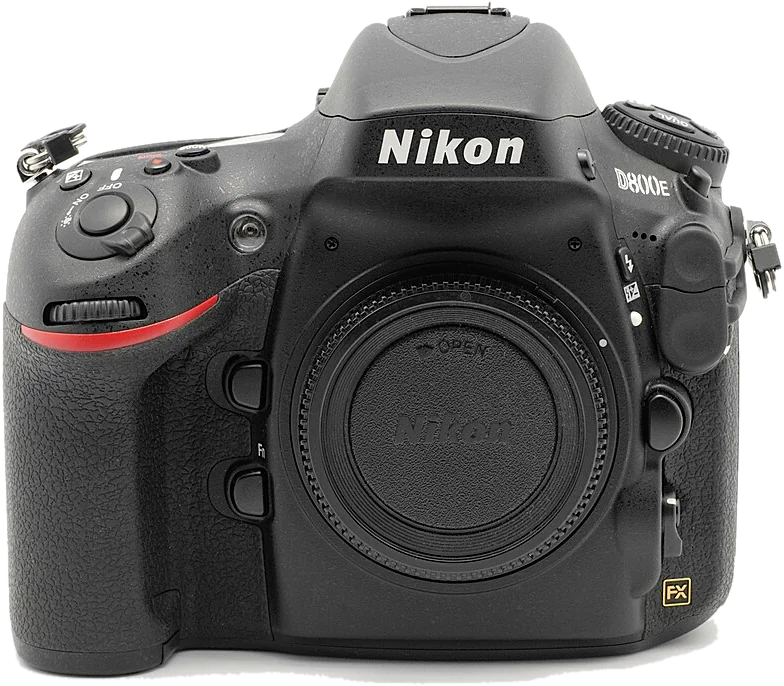
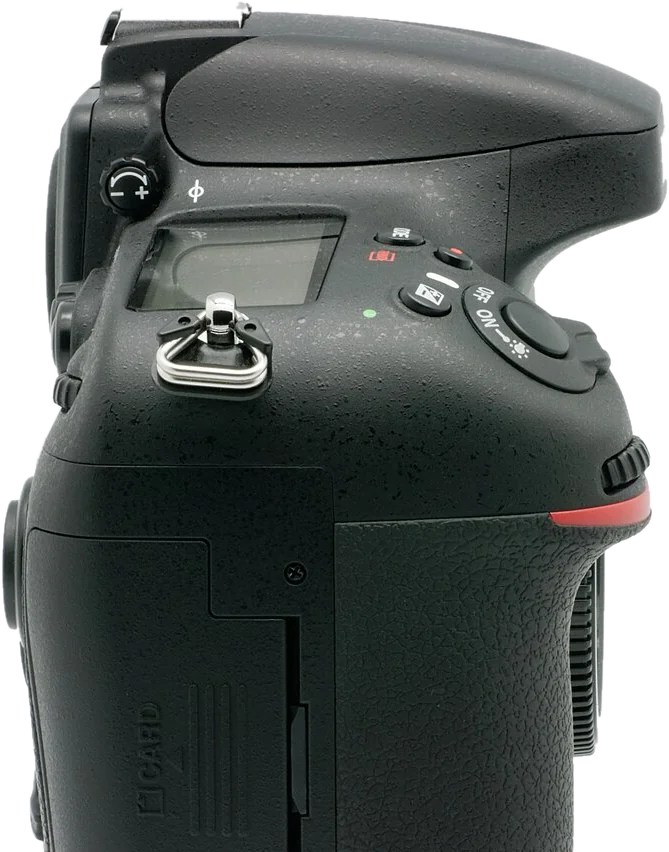
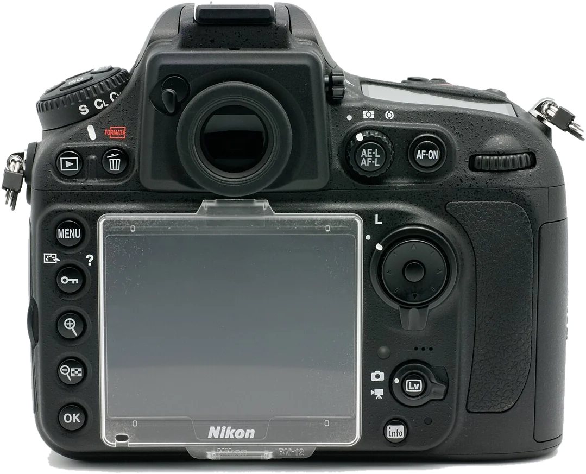

Ton appareil, bouton par bouton.
Touche un numéro : tu sais ce que c'est, à quoi ça sert, et quand t'en servir.
Glisse pour tourner · touche une commande



Vraies photos d'un D800E, au boîtier identique au D800. Fais glisser la photo pour voir tout l'appareil.
La batterie et la carte.
La batterie EN-EL15
Environ 900 photos par charge (norme CIPA). Elle se recharge dans le chargeur MH-25, en 2 h 35 environ quand elle est vide.
La trappe est sous l'appareil. La visée écran et la vidéo la vident plus vite.
Deux cartes : CF et SD
Une CompactFlash de type I (UDMA) et une SD, SDHC ou SDXC (UHS-I). Tu choisis la carte principale et le rôle de la seconde : débordement, sauvegarde, ou RAW sur l'une et JPEG sur l'autre.
Formate chaque nouvelle carte dans l'appareil.
Pas besoin de tout apprendre.
Maintenir + tourner
Presque tout se règle ainsi : maintiens une commande (MODE, ISO, WB, QUAL, ±…) et tourne une molette. Le réglage s'affiche sur l'écran de contrôle et dans le viseur.
L'écran de contrôle
Sur le dessus, à droite : il résume tout sans allumer le grand écran. C'est lui qu'on regarde en tournant les molettes.
Viseur ou écran
Par défaut, on vise au viseur. La commande Lv passe à la visée sur l'écran, pour la vidéo ou le trépied ; l'autofocus y est plus lent.